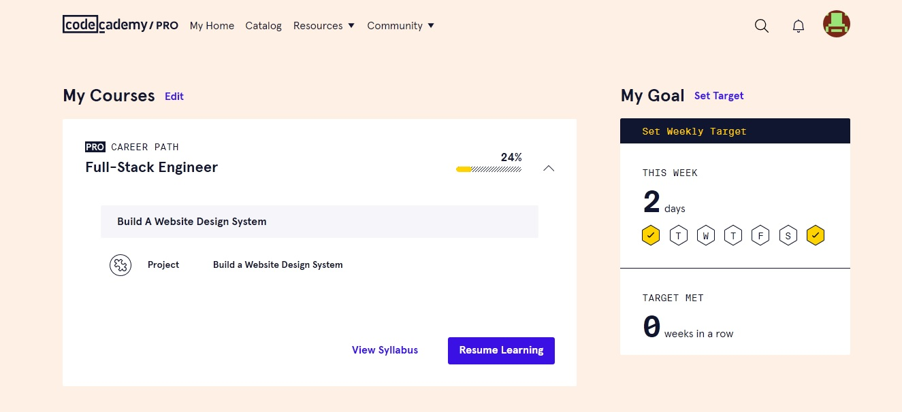
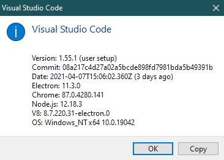

My Learning Environment
written on 11 April 2021
Today, I'm going to share a little about my learning environment. This article should serve as a guide for future new learners, as I am going through the programming learning curve as a beginner.
Firstly, I am using an Acer laptop model E5-474G. It is a six-year-old laptop, which I had upgraded its hard drive to a SSD drive two years ago (one of my best decisions ever).
I subscribed to a learning platform named 'Codecademy', and the course I am currently in is 'Full-Stack Engineer'. I have been paying the fee monthly. Paying annually seems to be a better choice though, since it comes with a discount.

The course I am in currently
Most of the time, the course allows me to write online, directly on the interface that Codecademy provides. However, sometimes I do write on my editor when I encounter some projects that are much complex or sophisticated.
As for the editor, I am using Visual Studio Code under version 1.55.1 by the time I am writing this. I had also made some customisations on my editors, such as the theme, shortcut keys and feature integrations.

Visual Studio Code and my PC versions
That is all for my learning environment. I will keep this article updated if I have get my learning environment updated. Till next time!